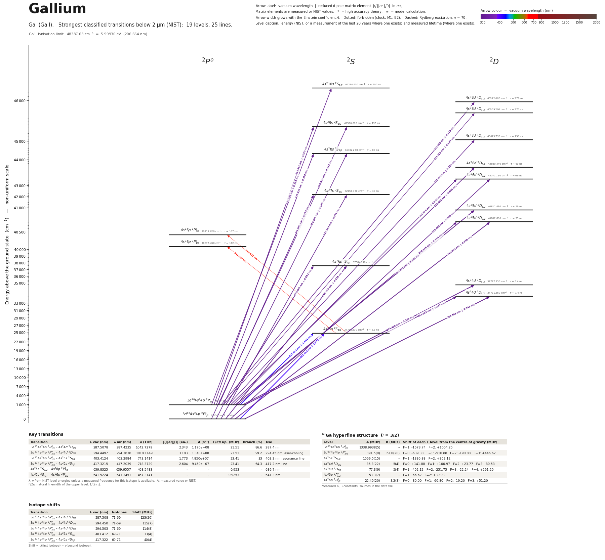

Gallium energy level diagram
Energy levels and transitions of neutral gallium (Ga I): the 25 strongest classified lines below 2 µm from the NIST Atomic Spectra Database and the 19 levels they connect, each line with its vacuum wavelength, frequency and, for 23 of them, the reduced dipole matrix element derived from the NIST transition rate. Measured lifetimes, transition rates, hyperfine constants and isotope shifts from the literature are included, each with its citation.
Hover a line or a level to isolate it, click to keep it selected. Scroll to zoom, drag to move.

Download: diagram (PDF) diagram (SVG) transitions (CSV) levels (CSV) source code

Key transitions of gallium
| Transition | λ vac (nm) | λ air (nm) | ν (THz) | |⟨J‖er‖J′⟩| (ea₀) | A (s⁻¹) | Γ/2π up. (MHz) | branch (%) | Use |
|---|---|---|---|---|---|---|---|---|
| 3d104s24p 2P°1/2 – 4s24d 2D3/2 | 287.5078 | 287.4235 | 1042.7279 | 2.343 | 1.170e+08 | 21.51 | 86.6 | 287.4 nm |
| 3d104s24p 2P°3/2 – 4s24d 2D5/2 | 294.4497 | 294.3636 | 1018.1449 | 3.183 | 1.340e+08 | 21.51 | 99.2 | 294.45 nm laser-cooling |
| 3d104s24p 2P°1/2 – 4s25s 2S1/2 | 403.4124 | 403.2984 | 743.1414 | 1.773 | 4.850e+07 | 23.41 | 33 | 403.3 nm resonance line |
| 3d104s24p 2P°3/2 – 4s25s 2S1/2 | 417.3215 | 417.2039 | 718.3729 | 2.604 | 9.450e+07 | 23.41 | 64.3 | 417.2 nm line |
| 4s25s 2S1/2 – 4s26p 2P°3/2 | 639.8325 | 639.6557 | 468.5483 | – | – | 0.953 | – | 639.7 nm |
| 4s25s 2S1/2 – 4s26p 2P°1/2 | 641.5224 | 641.3451 | 467.3141 | – | – | 0.9253 | – | 641.3 nm |
λ, ν from NIST level energies unless a measured frequency for this isotope is available. A: measured value or NIST. Γ/2π: natural linewidth of the upper level, 1/(2πτ).
69Ga hyperfine structure (I = 3/2)
| Level | A (MHz) | B (MHz) | Shift of each F level from the centre of gravity (MHz) |
|---|---|---|---|
| 3d104s24p 2P°1/2 | 1338.9938(5) | – | F=1: -1673.74 F=2: +1004.25 |
| 3d104s24p 2P°3/2 | 191.5(9) | 63.0(20) | F=0: -639.38 F=1: -510.88 F=2: -190.88 F=3: +446.62 |
| 4s25s 2S1/2 | 1069.5(15) | – | F=1: -1336.88 F=2: +802.12 |
| 4s24d 2D3/2 | -36.3(22) | 5(4) | F=0: +141.88 F=1: +100.97 F=2: +23.77 F=3: -80.53 |
| 4s24d 2D5/2 | 77.3(9) | 5(4) | F=1: -402.12 F=2: -251.75 F=3: -22.24 F=4: +291.20 |
| 4s26p 2P°1/2 | 53.3(7) | – | F=1: -66.62 F=2: +39.98 |
| 4s26p 2P°3/2 | 22.40(20) | 3.2(3) | F=0: -80.00 F=1: -60.80 F=2: -19.20 F=3: +51.20 |
Measured A, B constants; sources in the data file.
Isotope shifts
| Transition | λ vac (nm) | Isotopes | Shift (MHz) |
|---|---|---|---|
| 3d104s24p 2P°1/2 – 4s24d 2D3/2 | 287.508 | 71-69 | 123(20) |
| 3d104s24p 2P°3/2 – 4s24d 2D5/2 | 294.450 | 71-69 | 115(7) |
| 3d104s24p 2P°3/2 – 4s24d 2D3/2 | 294.503 | 71-69 | 114(8) |
| 3d104s24p 2P°1/2 – 4s25s 2S1/2 | 403.412 | 69-71 | 33(4) |
| 3d104s24p 2P°3/2 – 4s25s 2S1/2 | 417.322 | 69-71 | 40(4) |
Shift = ν(first isotope) − ν(second isotope).
Listed Ga transitions below 2 µm
| Lower level | Upper level | λ vacuum (nm) | λ air (nm) | ν (THz) | Type | |⟨J‖er‖J′⟩| (ea₀) | A (s⁻¹) | Branching (%) | Source of matrix element / A |
|---|---|---|---|---|---|---|---|---|---|
| 3d104s24p 2P°1/2 | 4s29s 2S1/2 | 219.6032 | 219.5346 | 1365.1550 | E1 | 0.142 NIST | 1.940e+06 NIST | 26.2 | NIST ASD (accuracy C+) |
| 3d104s24p 2P°3/2 | 4s210s 2S1/2 | 220.0307 | 219.9620 | 1362.5031 | E1 | 0.181 NIST | 3.110e+06 NIST | 62.2 | NIST ASD (accuracy C) |
| 3d104s24p 2P°3/2 | 4s28d 2D5/2 | 221.5045 | 221.4355 | 1353.4373 | E1 | 0.319 NIST | 3.170e+06 NIST | 85.6 | NIST ASD (accuracy C+) |
| 3d104s24p 2P°3/2 | 4s28d 2D3/2 | 221.5182 | 221.4492 | 1353.3534 | E1 | 0.107 NIST | 5.300e+05 NIST | 14.3 | NIST ASD (accuracy C+) |
| 3d104s24p 2P°3/2 | 4s29s 2S1/2 | 223.6612 | 223.5918 | 1340.3865 | E1 | 0.210 NIST | 4.000e+06 NIST | 54 | NIST ASD (accuracy C+) |
| 3d104s24p 2P°1/2 | 4s28s 2S1/2 | 225.5693 | 225.4995 | 1329.0480 | E1 | 0.189 NIST | 3.150e+06 NIST | 25.2 | NIST ASD (accuracy C+) |
| 3d104s24p 2P°3/2 | 4s27d 2D5/2 | 225.9910 | 225.9211 | 1326.5678 | E1 | 0.326 NIST | 3.100e+06 NIST | 46.5 | NIST ASD (accuracy C) |
| 3d104s24p 2P°1/2 | 4s26d 2D3/2 | 229.4888 | 229.4181 | 1306.3489 | E1 | 0.408 NIST | 6.970e+06 NIST | 48.1 | NIST ASD (accuracy C+) |
| 3d104s24p 2P°3/2 | 4s28s 2S1/2 | 229.8529 | 229.7821 | 1304.2795 | E1 | 0.258 NIST | 5.560e+06 NIST | 44.5 | NIST ASD (accuracy C+) |
| 3d104s24p 2P°3/2 | 4s26d 2D5/2 | 233.8949 | 233.8232 | 1281.7402 | E1 | 0.608 NIST | 9.750e+06 NIST | 67.3 | NIST ASD (accuracy C+) |
| 3d104s24p 2P°3/2 | 4s26d 2D3/2 | 233.9240 | 233.8524 | 1281.5804 | E1 | 0.200 NIST | 1.580e+06 NIST | 10.9 | NIST ASD (accuracy C+) |
| 3d104s24p 2P°1/2 | 4s27s 2S1/2 | 237.1986 | 237.1262 | 1263.8881 | E1 | 0.271 NIST | 5.570e+06 NIST | 27.3 | NIST ASD (accuracy C+) |
| 3d104s24p 2P°3/2 | 4s27s 2S1/2 | 241.9399 | 241.8664 | 1239.1196 | E1 | 0.374 NIST | 1.000e+07 NIST | 49 | NIST ASD (accuracy C+) |
| 3d104s24p 2P°1/2 | 4s25d 2D3/2 | 245.0809 | 245.0066 | 1223.2390 | E1 | 0.899 NIST | 2.780e+07 NIST | 80.6 | NIST ASD (accuracy C+) |
| 3d104s24p 2P°3/2 | 4s25d 2D5/2 | 250.0924 | 250.0170 | 1198.7267 | E1 | 1.244 NIST | 3.340e+07 NIST | 96.9 | NIST ASD (accuracy C+) |
| 3d104s24p 2P°3/2 | 4s25d 2D3/2 | 250.1459 | 250.0705 | 1198.4704 | E1 | 0.414 NIST | 5.540e+06 NIST | 16.1 | NIST ASD (accuracy C+) |
| 3d104s24p 2P°1/2 | 4s26s 2S1/2 | 266.0652 | 265.9861 | 1126.7631 | E1 | 0.476 NIST | 1.220e+07 NIST | – | NIST ASD (accuracy C+) |
| 3d104s24p 2P°3/2 | 4s26s 2S1/2 | 272.0453 | 271.9647 | 1101.9945 | E1 | 0.682 NIST | 2.340e+07 NIST | – | NIST ASD (accuracy C+) |
| 3d104s24p 2P°1/2 | 4s24d 2D3/2 | 287.5078 | 287.4235 | 1042.7279 | E1 | 2.343 NIST | 1.170e+08 NIST | 86.6 | NIST ASD (accuracy B+) |
| 3d104s24p 2P°3/2 | 4s24d 2D5/2 | 294.4497 | 294.3636 | 1018.1449 | E1 | 3.183 NIST | 1.340e+08 NIST | 99.2 | NIST ASD (accuracy B+) |
| 3d104s24p 2P°3/2 | 4s24d 2D3/2 | 294.5034 | 294.4173 | 1017.9594 | E1 | 1.147 NIST | 2.610e+07 NIST | 19.3 | NIST ASD (accuracy B+) |
| 3d104s24p 2P°1/2 | 4s25s 2S1/2 | 403.4124 | 403.2984 | 743.1414 | E1 | 1.773 NIST | 4.850e+07 NIST | 33 | NIST ASD (accuracy B+) |
| 3d104s24p 2P°3/2 | 4s25s 2S1/2 | 417.3215 | 417.2039 | 718.3729 | E1 | 2.604 NIST | 9.450e+07 NIST | 64.3 | NIST ASD (accuracy B+) |
| 4s25s 2S1/2 | 4s26p 2P°3/2 | 639.8325 | 639.6557 | 468.5483 | E1 | – | – | – | – |
| 4s25s 2S1/2 | 4s26p 2P°1/2 | 641.5224 | 641.3451 | 467.3141 | E1 | – | – | – | – |
Reduced dipole matrix elements follow the convention A = ω³|d|²/(3πε₀ħc³(2J′+1)), with J′ the upper level. Tags show where a number comes from: measured, NIST compilation, high-accuracy theory, or a model calculation.
Ga energy levels
Ga⁺ ionisation limit 48387.63 cm⁻¹ = 5.99930 eV (206.664 nm)
Sources
- Brage, Froese Fischer, Carlsson, Wahlstrom, Phys. Rev. A 35, 1113 (1987), p. 1117, Table …
- Farooq-Smith et al., Phys. Rev. C 96, 044324 (2017), Table I and Table II; original: Chea…
- Farooq-Smith et al., Phys. Rev. C 96, 044324 (2017), Table I; original: Cheal et al., Phy…
- Jonsson, Levinson, Lindgren, Persson, Wahlstrom, Z. Phys. A 322, 351 (1985), Table 4, row…
- Jonsson, Levinson, Svanberg, Wahlstrom, Phys. Lett. A 93, 121 (1983) (abstract on OSTI; t…
- Lurio, Prodell, Phys. Rev. 101, 79 (1956) (abstract): ground-state hyperfine splitting De…
- NIST ASD
- NIST ASD level energies
- Norton, Gallagher, Phys. Rev. A 3, 915 (1971) (abstract; Hanle effect)
- Rehse, Fairbank, Lee, J. Opt. Soc. Am. B 18, 855 (2001) (abstract) (3-sigma errors)
- Rehse, Fairbank, Lee, J. Opt. Soc. Am. B 18, 855 (2001) (abstract) (laser-induced fluores…
- Yildiz, Celik, Kilic, Acta Phys. Pol. A 115, 641 (2009), p. 643, Table III, column 'Exp. …
- Yildiz, Celik, Kilic, Acta Phys. Pol. A 115, 641 (2009), p. 643, Table III, column 'Exp. …
- Yildiz, Celik, Kilic, Acta Phys. Pol. A 115, 641 (2009), p. 643, Table III, column 'Exp. …
- Yildiz, Celik, Kilic, Acta Phys. Pol. A 115, 641 (2009), p. 643, Table III, column 'Exp. …
Both stable isotopes have I = 3/2. Ground-doublet hyperfine constants come from atomic-beam magnetic resonance (Lurio & Prodell 1956; Daly & Holloway 1954 as reproduced in Fig. 1 of Marago et al. 2003); values labelled derived were computed here from the printed intervals. Rehse et al. 2001 quote 3-sigma errors. Isotope shifts follow nu(first)-nu(second); where the source does not state the sign this is said in the note. Extra fields beyond SCHEMA.md: isotope_shift_factors, hyperfine_A_ratio_5s_over_4p32, ionization_energy, mu_N. The UDel portal has no neutral Ga entry (only Ga+). Added 2026-10-01 (second pass): 6p and 7p 2P lifetimes and hyperfine constants. Jonsson et al., Z. Phys. A 322, 351 (1985) (read in the archived Lund University copy) also give, for levels absent from NIST ASD: lifetimes 8p 660(40) ns, 9p 920(60) ns, 10p 1450(100) ns, 11p 2000(200) ns (2P doublets, room temperature; fit tau = 6.0 (n*)^2.67 ns) and 2P3/2 hyperfine constants A / B in MHz for 69Ga: 8p 6.35(2) / 0.85(1), 9p 3.96(1) / 0.51(2), 10p 2.64(1) / 0.34(1), 11p 1.84(1) / 0.22(2); for 71Ga: 9p A = 5.03(1), 10p A = 3.35(1), 11p 2.33(1) / 0.13(2) (other 71Ga entries illegible in the scan). The same paper's Table 4 quotes the atomic-beam ground-doublet constants of 69Ga as A(2P1/2) = 1338.994, A(2P3/2) = 190.794, B(2P3/2) = 62.522 MHz, in agreement with the entries here. Third pass (2026-10-02): nd 2D (n = 4-9) and ns 2S (n = 7-11) lifetimes of Carlsson et al. 1986 entered second-hand (method compil
Atoms with measured data
- Lithium-632 levels, 85 lines
- Lithium-732 levels, 85 lines
- Beryllium-917 levels, 26 lines
- Sodium-2336 levels, 106 lines
- Magnesium-2418 levels, 61 lines
- Magnesium-2518 levels, 61 lines
- Potassium-3934 levels, 84 lines
- Potassium-4034 levels, 84 lines
- Potassium-4134 levels, 84 lines
- Calcium-4035 levels, 61 lines
- Calcium-4335 levels, 61 lines
- Rubidium-8536 levels, 94 lines
- Rubidium-8736 levels, 94 lines
- Strontium-8740 levels, 70 lines
- Strontium-8840 levels, 70 lines
- Caesium-13331 levels, 79 lines
- Barium-13744 levels, 89 lines
- Barium-13844 levels, 89 lines
- Dysprosium-16339 levels, 55 lines
- Dysprosium-16439 levels, 55 lines
- Ytterbium-17118 levels, 26 lines
- Ytterbium-17418 levels, 26 lines